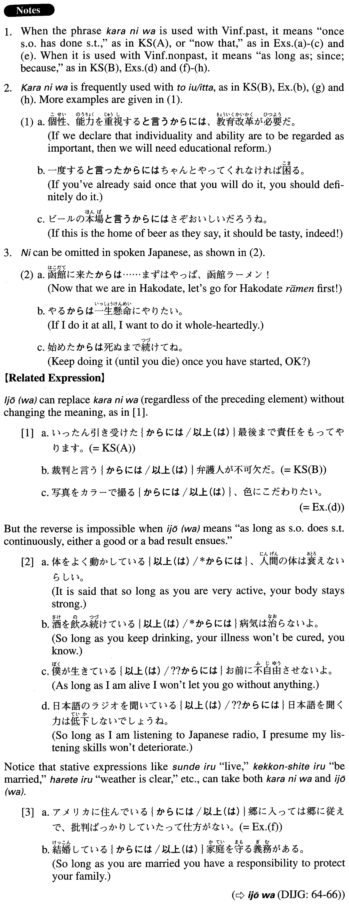

←
DoJG
→
からには
(A. 195)
Example sentences
(ksa).
いったん引き受けた
からには
最後まで責任をもってやります。
Once I take on (the job), I will fulfill my responsibility and complete it.
(ksb).
裁判と言う
からには
弁護人が不可欠だ。
Since it is a trial, a defence attorney will be indispensable.
(a).
生まれてきた
からには
長生きしたい。
So long as I'm here (literally: Since I was born), I'd like to live a long time.
(b).
行くって言った
からには
ちゃんと行かなきゃ駄目だよ。
Now that you've said you're going there, you have to go, OK?
(c).
ネット上で文章を書いた
からには
、必ずそれを読む人が存在するのです。
Once you write a passage on the Internet, there are definitely people who will read it.
(d).
写真をカラーで撮る
からには
、色にこだわりたい。
As long as I am taking pictures with colour film, I want to be very particular about the colour.
(e).
マラソンに出る
からには
、絶対に勝ちたい。
Now that I am taking part in the marathon, I absolutely want to win.
(f).
アメリカに住んでいる
からには
郷に入っては郷に従えで、批判ばっかりしていたって仕方がない。
As long as you are living in the U.S., do as the Americans do; it won't help if you just complain.
(g).
「ブレーンストーミング」と言う
からには
、発言に制限を設けてはならない。
Since you are calling it brainstorming, you shouldn't restrict statements people make.
(h).
世界一周と言う
からには
、軽度の基準点であるグリニッジ天文台から出発しおうと決め込んだ。
Because I was going to travel around the world, I decided to start my trip from London's Greenwich Observatory, which is the base point of longitude.
Formation
(i)
Vinformal
からには
行く
からには
So long as someone goes there
行った
からには
Once someone has gone there
(ii)
Quoteと言う
からには
戦争と言う
からには
As long as one calls it a war
見たと言う
からには
As long as someone said he saw it
